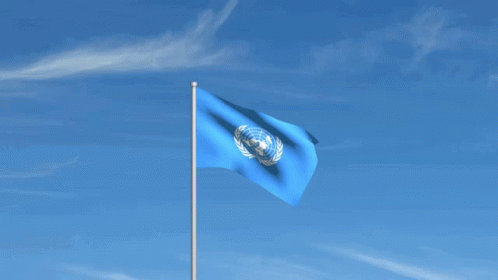

Pada 15 Juli 1946, Dr. H.J. van Mook atas nama Belanda menyelenggarakan konferensi di Malino, Sulawesi Selatan untuk membahas tentang pembentukan negara-negara bagian atau yang bisa dikatakan “negara-negara boneka”. Ini dilakukan dengan tujuan untuk mengepung keberadaan RI. Belanda bisa memperlemah persatuan dan kesatuan RI melalui berbagai cara, salah satunya adalah dengan taktik adu domba (divide et impera).
Konferensi Malino ini berhasil membentuk tujuh negara bagian dan sembilan daerah otonom. Negara-negara bagiannya yaitu:
- Negara Republik Indonesia (RI)
- Negara Indonesia Timur (NIT)
- Negara Sumatera Timur (NST)
- Negara Sumatera Selatan
- Negara Madura
- Negara Pasundan
- Negara Jawa Timur
Beberapa tahun kemudian, terjadinya kesepakatan antara Republik Indonesia, BFO, dan Belanda melalui Konferensi Meja Bundar, yaitu pengakuan kedaulatan Indonesia dalam bentuk negara federal Republik Indonesia Serikat (RIS) pada Desember 1949.
Namun, ketika keberadaan RIS sekitar enam bulan, rakyat Indonesia mulai menyadari bahwa RIS adalah warisan Belanda yang tidak bisa bergerak sendiri dan tidak sesuai dengan proklamasi 17 Agustus 1945. RIS melawan jiwa kesatuan dan persatuan, dan hanya bermanfaat bagi Belanda. Sebab itu, rakyat di negara-negara bagian berusaha untuk kembali ke negara kesatuan dengan cara berdemonstrasi.
Pada 19 Mei 1950, Drs. Moh. Hatta yang mewakili Pemerintah RIS, NST, dan NIT, berunding dengan Pemerintah RI, yang diwakili oleh Wakil Perdana Menteri Abdul Halim. Perundingan ini menghasilkan persetujuan:
- RIS dan RI sepakat membentuk negara kesatuan yang sesuai dengan proklamasi kemerdekaan 17 Agustus 1945.
- RIS dan RI membentuk panitia bersama yang bertugas menyusun undang-undang dasar negara kesatuan.
Sehari sesudahnya, Ir. Soekarno membaca piagam terbentuknya NKRI dan dinyatakan mulai berlaku pada 17 Agustus 1950. Pada hari itu juga (14/8), Soekarno terbang ke Yogyakarta untuk menerima kembali jabatan presiden RI yang sebelumnya diduduki Mr. Asaat.
Dengan demikian, sejak 17 Agustus 1950, negara RIS bubar dan terbentuknya Negara Kesatuan Republik Indonesia (NKRI) dengan UUDS 1950 sebagai konstitusinya.
2. Pemilihan Umum Pertama Tahun 1955
Sejak kembalinya NKRI, sebagian partai politik belum melakukan tugasnya dengan benar dan terjadinya penyimpangan karena hanya memperjuangkan kepentingan golongan tertentu. Kepincangan politik menimbulkan keinginan rakyat Indonesia untuk dilaksanakannya pemilihan umum. Pemilu disiapkan Kabinet Ali I dan dilaksanakan Kabinet Burhanuddin Harahap. Pemilu pertama melalui dua tahap:
- 29 September 1955 untuk memilih anggota DPR.
- 15 Desember 1955 untuk memilih anggota Lembaga Konstituante.
a. Upaya Konstituante membuat UUD
Konstituante memiliki tugas untuk membuat undang-undang dasar yang akan menggantikan UUDS 1950 sebagai konstitusi negara. Persidangan pertama dilaksanakan pada 10 November 1956. Namun, hingga 1958, UUD masih belum dirumuskan karena perbedaan pendapat.
Pada saat yang sama, jeritan rakyat untuk kembali ke UUD 1945 semakin keras. Pada 30 Mei 1959, Konstituante mengumut suara dan hasilnya adalah sebagian besar menyetujui UUD 1945. Namun, karena ini tidak memenuhi kuorum (minimum ⅔ anggota harus setuju) maka pemungutan suara harus diulang.
Ini dilakukan pada 1 dan 2 Juni 1959 tetapi masih belum mencapai kuorum. Untuk meredam kemacetan, Konstituante memutuskan reses yang ternyata untuk selama-lamanya.
Kegagalan pembentukan UUD membahayakan kelangsungan negara, dari segi keamanan ke ekonomi hingga pembangunan negara, karena tidak memiliki pedoman konstitusi yang jelas. Untuk mengatasi itu, Penguasa Perang Pusat, Letjen Nasution mengeluarkan peraturan yang melarang kegiatan politik pada 3 Juni 1959.
b. Upaya Konstituante membuat UUD
Pada 5 Juli 1959, pukul 17.00, di Istana Merdeka, Presiden Soekarno mengeluarkan dekrit yang berisi:
- Penetapan pembubaran Konstituante
- Penetapan Undang-Undang Dasar NRI 1945 berlaku bagi segenap bangsa Indonesia
- Segera membentuk MPRS dan DPAS
c. Pengaruh Dekrit Presiden 5 Juli 1959
Dekrit Presiden 5 Juli 1959 menandai era baru, yaitu Masa Demokrasi Terpimpin dengan konstitusi UUD 1945. Menurut UUD 1945, Demokrasi Terpimpin berarti kedaulatan ada di tangan rakyat dan sepenuhnya dilakukan oleh MPR.
MPRS (Majelis Permusyawaratan Rakyat Sementara) yang dibentuk dapat diduduki 555 orang yang terdiri dari anggota DPR, wakil golongan, dan utusan daerah. Di antara 1960-1965, MPRS telah melakukan persidangan sebanyak 3 kali:
- Sidang Umum Pertama (10 November – 7 Desember 1960) menetapkan Manifesto Politik Republik Indonesia sebagai Garis Besar Haluan Negara dan menghasilkan Garis Pola Pembangunan Nasional Semesta Berencana Tahapan Pertama 1961-1969.
- Sidang Umum Kedua (15-22 Mei 1963) di antaranya menghasilkan Ketetapan MPRS Nomor III/MPRS/1963 tentang Pengangkatan Presiden Soekarno/Mandataris MPRS Menjadi Presiden Seumur Hidup.
- Sidang Umum Ketiga (11-16 April 1965) di antaranya menetapkan pidato Presiden Soekarno berjudul "Berdiri di atas Kaki Sendiri" sebagai pedoman revolusi dan politik luar negeri Indonesia.
4. Perjuangan Bangsa Indonesia Merebut Irian Barat
a. Perjuangan melalui Jalur Diplomasi
Sesuai kesepakatan Konferensi Meja Bundar 1949, dalam satu tahun sejak kemerdekaan Indonesia, Irian Barat seharusnya menjadi wilayah Indonesia. Namun, Belanda mengingkari janjinya dan masalah ini dilarut-larutkan. Setelah beberapa konferensi antara kedua pihak, masalah ini masih belum menghasilkan titik temu.
Indonesia juga berturut-turut membawa masalah Irian Barat dalam forum Sidang Umum PBB sejak September 1954 tetapi Belanda dan sekutunya selalu menjegal keinginan bangsa Indonesia. Karena Indonesia, India dan 7 negara lainnya tidak pernah mencapai kuorum, sejak 10 Desember 1954, PBB akan mengesampingkan masalah Irian Barat dalam sidang-sidang berikutnya.
Dalam upaya pembebasan Irian Barat, bangsa Indonesia menyatakan bahwa Uni Indonesia-Belanda dibubarkan secara resmi pada 3 Mei 1956. Ini diperkuat dengan pernyataan pembatalan perjanjian KMB. Selain itu, pada 4 Agustus pada tahun itu, pemerintah Indonesia menolak mengakui utang sebesar 3.661 gulden ke Belanda sesuai dengan KMB.
Berdasarkan keputusan rapat 18 November 1957, perusahaan-perusahaan Belanda diberhentikan dan dinasionalisasikan satu tahun kemudian. Maskapai Penerbangan Belanda dan perwakilan konsuler Belanda di Indonesia juga dihentikan; semua terbitan dan film dalam Bahasa Belanda pun dilarang.
c. Pembentukan Tri Komandp Rakyat (Trikora)
Sejak 17 Agustus 1960, pemerintah RI secara resmi memutuskan hubungan diplomatik dengan Kerajaan Belanda. Belanda menanggapi ini dengan membentuk Dewan Papua bagi rakyat Irian Barat pada 5 April 1961. Ini dilanjutkan dengan pengumuman berdirinya negara Irian Barat di Majelis Umum PBB pada September 1961.
Tindakan Indonesia selanjutnya adalah untuk mengumandangkan operasi Tri Komando Rakyat (Trikora) di Yogyakarta dengan isi:
- Gagalkan pembentukan Negara Papua buatan Belanda
- Kibarkan Sang Merah Putih di Irian Barat tanah air Indonesia
- Bersiaplah mobilisasi umum untuk mempertahankan kemerdekaan dan kesatuan tanah air dan bangsa

Rapat Tri Komando Rakyat pada Desember 1961
Dari bulan Maret hingga Agustus 1962, Komando Mandala berhasil melaksanakan tahap infiltrasi TNI dan berbagai sukarelawan ke Irian Barat. Selanjutnya, Operasi Jayawijaya seharusnya terjadi, yaitu serangan terbuka yang bertujuan untuk menguasai wilayah strategis Jayapura dan Biak. Inilah operasi amfibi terbesar dalam sejarah operasi militer Indonesia. Namun, ini dibatalkan karena ditemukannya jalur yang lebih damai.
d. Kembalinya Irian Barat ke Wilayah NKRI
Kesungguhan Indonesia memperjuangkan kembalinya Irian Barat menarik perhatian dunia. PBB kemudian mengutus diplomat Amerika Serikat Ellsworth Bunker untuk menengahi perselisihan Indonesia dan Belanda.
Pada Maret 1962, dikeluarkannya Proposal Bunker (Rencana Bunker) yang berisi Belanda harus menyerahkan Irian Barat kepada Indonesia melalui suatu badan pemerintahan PBB dan rakyat Irian Barat diberi kesempatan untuk menentukan nasibnya. Indonesia dan Belanda setuju. Kemudian, terjadinya perundingan antara kedua negara pada 15 Agustus 1962. Mereka menyetujui New York Agreement (Persetujuan New York) yang berisi:
- Belanda akan menyerahkan Irian Barat kepada United Nations Temporary Executive Authority (UNTEA) atau Penyelenggara Pemerintahan Sementara PBB paling lambat 1 Oktober 1962.
- Pasukan Indonesia di Irian Barat di bawah UNTEA dan pasukan Belanda berangsur-angsur dipulangkan.
- Bendera Merah Putih mulai dikibarkan di sebelah bendera PBB sejak 31 Desember 1962.
- Indonesia akan resmi menerima pemerintahan Irian Barat dari UNTEA selambat-lambatnya 1 Mei 1963.
- Pemerintah RI wajib menyelenggarakan penentuan pendapat rakyat (Pepera) paling lambat akhir tahun 1969.
Dari 24 Maret hingga 4 Agustus 1969, diselenggarakan Pepera bagi penduduk Irian Barat dan mereka memilih untuk bertetap satu dengan RI. Hasil ini dilaporkan ke PBB dan sejak November 1969, Irian Jaya sah menjadi bagian dari wilayah Indonesia
5. Gejolak Keamanan Dalam Negeri yang Mengancam Disintegrasi Bangsa
a. Pemberontakan DI/TII di Berbagai Wilayah
Sekarmaji Marijan Kartosuwiryo bercita-cita mendirikan sebuah negara Islam yang terpisah dari RI. Ini dilakukannya dengan pembentukan Darul Islam (DI). Pada 7 Agustus 1949 Kartosuwiryo mendirikan Negara Islam Indonesia (NII) di Kabupaten Tasikmalaya. Tentara yang mendukungnya disebut Tentara Islam Indonesia (TII) sehingga gerakan separatis ini dikenal sebagai DI/TII.
Gerakan DI/TII diketuai Kartosuwiryo dan merembet ke Jawa Tengah (dipimpin Amir Fatah), Sulawesi Selatan (dipimpin Kahar Muzakkar), Kalimantan Selatan (dipimpin Ibnu Hadjar), dan Aceh (dipimpin Tengku Daud Beureueh). DI/TII sering meneror rakyat, seperti membakar rumah dan membongkar rel kereta api. Pemerintahan Indonesia berusaha mengatasi ini dengan jalur diplomatik agar DI/TII kembali ke pangkuan RI.
Namun, ini tidak berhasil dan TNI terpaksa melaksanakan Operasi Pagar Betis dengan kerja sama rakyat. Ini menjadikan kekuasaan DI/TII semakin sempit sehingga banyak anggotanya menyerahkan diri kepada pemerintah. Kartosuwiryo berhasil ditangkap pada 4 Juni 1962. Setelah itu, TNI melakukan operasi penumpasan pemberontakan di daerah-daerah DI/TII lainnya.
b. Pemberontakan APRA, Andi Azis, RMS, PRRI, dan Permesta
Salah satu kesepakatan KMB adalah KNIL (tentara kerajaan Hindia-Belanda) hendak dibubarkan dan anggota-anggotanya yang ingin menjadi anggota angkatan perang harus bergabung dengan Angkatan Perang Republik Indonesia Serikat (APRIS).
Di bandung, anggota KNIL, yang mayoritas orang Belanda, tidak ingin bergabung dengan APRIS dan membentuk APRA (Angkatan Perang Ratu Adil) yang dipimpin Raymond Westerling. APRA menuntut Pemerintah RIS agar organisasinya diakui sebagai Tentara Pasundan dan menolak digabungnya Negara Bagian Pasundan dengan RIS. Tuntutan ini ditolak sehingga pada 23 Januari 1950, APRA menyerang Bandung dan membunuh setiap tentara TNI. APRA mengundurkan diri ketika bala bantuan TNI tiba.
Pada 5 April 1950, Andi Azis dan pengikutnya (bekas KNIL) memberontak di Makassar. Pemerintah Indonesia menanggapi ini dengan mengirim pasukan yang dipimpin Kolonel Alex Kawilarang. Hasilnya, pada 15 April 1950, Andi Azis terpaksa menyerahkan diri.
Pada 25 April 1950, Dr. Soumokil mendirikan Republik Maluku Selatan (RMS) di Ambon. RMS melakukan praktik teror, intimidasi, dan pembunuhan. Awalnya, RIS berupaya menyelesaikan pemberontakan ini dengan cara damai, tetapi ini gagal. Selanjutnya, mereka mengirim Kolonel Alex Kawilarang untuk menumpas RMS. pada 12 Desember 1963, Soumokil berhasil ditangkap, dihadapkan ke pengadilan, dan dihukum mati.
c. Peristiwa G30S/PKI
Partai Komunis Indonesia ingin membentuk negara yang berlandas komunisme. Jauh sebelum terjadinya Peristiwa G30S/PKI, PKI telah melancarkan berbagai pemberontakan. Di bawah pimpinan Muso, aksi teror PKI semakin meningkat, puncaknya adalah pemberontakan di Madiun pada saat agresi militer Belanda kedua (1948). RI mampu menumpas pemberontakan ini, tetapi tidak sampai akar-akarnya.
12 tahun kemudian, pada tahun 1960, pemerintah RI mengeluarkan undang-undang tentang bagi hasil penduduk dan penguasaan tanah, tetapi tidak dapat dilaksanakan. Ini mengecewakan kalangan bawah dan digunakan PKI sebagai kesempatan pendekatan dengan para buruh, nelayan, dan petani dengan janji-janji kenaikan upah.
Sejak tahun 1960, PKI berhasil mendorong pemerintah untuk membubarkan berbagai partai politik seperti Masyumi, PSI, Manifesto Kebudayaan. Dan Badan Pendukung Soekarno.
Pengaruh PKI berkembang sangat luas, bahkan beberapa perwira ABRI (nama TNI pada masa itu) terus berjuang mewujudkan Angkatan Kelima. Ide Angkatan Kelima oleh D.N. Aidit merujuk pada kaum buruh dan tani yang dipersenjatai. Tuntutan PKI ini diubah bentuknya menjadi ‘kebulatan tekad’ seakan-akan tuntutan tersebut datang dari semua kekuatan politik. Akibatnya, organisasi yang anti-PKI dapat dituduh sebagai anti pemerintah (walau Angkatan Kelima secara resmi ditolak Angkatan Darat pada September 1965).
Pada saat ini, hanya Angkatan Darat (AD) dapat mengiimbangi PKI dan pertentangan antara mereka semakin meningkat. Untuk mengatasi hambatan ini, PKI melancarkan gerakan pada 30 September 1965 (G30S/PKI) yang dipimpin Letkol Untung Sutopo. Pada 1 Oktober 1965, PKI berhasil menangkap dan membunuh enam perwira tertinggi AD, yaitu: Letnan Jenderal Ahmad Yani, Letjen Suprapto, Letjen S. Parman, Letjen M. T. Haryono, Mayjen D. I. Panjaitan, dan Mayjen Sutoyo Siswomiharjo.
7 Pahlawan Revolusi (pikiran-rakyat.com)
Di Yogyakarta, Kolonel Katamso dan letnan Kolonel Sugiyono juga diculik dan dibunuh PKI karena secara tegas menolak berhubungan dengan Dewan Revolusi. Setelah membunuh beberapa perwira AD, PKI berhasil menguasai sarana komunikasi vital, yaitu studio RRI. Dengannya, mereka menyiarkan tentang G30S yang berisi:
- PKI telah melakukan gerakan yang ditujukan kepada para perwira tinggi “Dewan Jenderal” yang akan “mengadakan kudeta terhadap pemerintah”.
- Mengeluarkan dekrit pembentukan “Dewan Revolusi” yang berisi 45 sipil militer yang mendukung G30S.
- Mendemisioner Kabinet Dwikora.
- Menghapus pangkat jenderal dan pangkat tertinggi dalam ABRI diganti menjadi letnan kolonel. Perwira ABRI yang ikut G30S, pangkatnya dinaikkan satu tingkat dan yang ikut gerakan pembersihan Dewan Jenderal diangkat dua tingkat.
PERAN INDONESIA DALAM KERJA SAMA INTERNASIONAL
1. Peran Indonesia dalam KAAPada tahun 1955, pemerintah RI berhasil menyelenggarakan Konferensi Asia-Afrika (KAA). Peristiwa ini dapat terjadi karena empat hal:
- Adanya pertentangan antara blok Barat yang kapitalis dan blok Timur yang komunis telah mengancam perdamaian dan ketertiban dunia.
- Banyak negara Asia-Afrika yang menjadi korban imperialisme/kolonialisme negara-negara Barat.
- Adanya politik diskriminasi rasial dalam beberapa negara Afrika.
- Bangsa-bangsa Asia-Afrika merasa perlu menjalin kerja sama menghadapi masalah pembangunan, ekonomi, sosial, pendidikan, dan kebudayaan.
Konferensi Kolombo diadakan di Kolombo, Srilanka pada 28 April – 2 Mei 1954 dan dihadiri oleh India, Srilangka, Pakistan, Indonesia dan Birma (Myanmar). Tujuan utama konferensi ini adalah untuk membahas Konferensi Jenewa (yang bertujuan untuk menyatukan Vietnam dan mendiskusikan perdamaian di Indocina). Namun, pembicaraan kemudian berkembang setelah Indonesia melontarkan gagasan perlunya KAA.
Usul itu diterima semua peserta walau masih agak ragu. Pada akhir konferensi, diputuskan hal-hal berikut:
- Indochina (Kamboja, Laos, Vietnam) harus dimerdekakan dari penjajahan Perancis.
- Menuntut kemerdekaan bagi Tunisia dan Maroko.
- Menyetujui diadakannya KAA dan menugaskan Indonesia menyelidiki kemungkinan mengadakan konferensi tersebut.
- KAA akan diselenggarakan di Bandung pada 18-24 April 1955.
- 30 negara Asia dan Afrika diundang sebagai peserta konferensi.
- Menetapkan rancangan agenda acara konferensi dan merumuskan tujuan-tujuan utama KAA.
 Pelopor KAA (blogspot.com)
Pelopor KAA (blogspot.com)
KAA berhasil mencetuskan sepuluh prinsip yang tertuang dalam Declaration on The Promotion of World Peace and Cooperation atau yang sering dikenal sebagai Dasasila Bandung. Isinya adalah:
(kominfo.go.id)
Penyelenggaraan KAA berjalan dengan sukses. KAA berdampak besar bagi hubungan antar negara dan perdamaian dunia. Kedudukan Indonesia di mata dunia pun meningkat sebab bisa mempersatukan negara-negara Asia-Afrika. Berkat KAA, banyak negara di Asia dan Afrika menjadi merdeka, serta meredakan ketegangan antara Blok Barat dan Blok Timur.50 tahun sejak pertemuan KAA, para kepala negara Asia dan Afrika diundang untuk bertemu di Bandung dan Jakarta pada 19-24 April 2005. Sekjen PBB juga ikut hadir dalam pertemuan ini. Tema KAA ke-2 adalah Reinvigorating Towards a New Asian-African Strategic Partnership . Kegiatan KAA ke-2 semakin mengokohkan persatuan negara-negara Asia dan Afrika.
10 tahun kemudian, pada 2015, diadakan Konferensi Tingkat Tinggi Asia-Afrika (KTT) atau KAA ke-3. Ini diadakan di Jakarta dan Bandung pada 19-24 April 2015. KTT KAA 89 kepala negara dari 109 negara di kawasan Asia dan Afrika, 17 negara pengamat, 20 organisasi internasional, dan 1.426 perwakilan media.
Tema KAA KTT adalah Promoting South-South Cooperation for World Peace and Prosperity (Mempromosikan Kerjasama Selatan-Selatan bagi Perdamain dan Kesejahteraan Dunia). KTT KAA menghasilkan tiga dokumen penting, yakni:
- Pesan bandung 2015 (Bandung Message).
- Deklarasi Penguatan kemitraan Strategis Baru Asia Afrika (NAASP).
- Deklarasi kemerdekaan Palestina.
Gerakan Non Blok (GNB) atau Non Aligned Movement (NAM) (didirikan pada 1961) adalah wadah negara-negara yang tidak termasuk blok Barat atau Timur. GNB tidak diartikan sebagai netralisme, melainkan sebagai subjek yang ikut berperan dalam peristiwa-peristiwa internasional.
Negara-negara GNB tidak ingin diombang-ambingkan dua ideologi raksasa yang sedang bersaing; mereka ingin menentukan jalan mereka sendiri. Tokoh-tokoh pemrakarsa GNB (The Initatige Five) adalah: Presiden Soekarno (Indonesia), Presiden Josip Broz (Yugoslavia), Presiden Gamal Abdel Nasser (Mesir), PM Jawaharlal Nehru (India), dan PM Kwame Nkrumah (Ghana).
Tujuan GNB ada dua, yaitu:
- Tujuan ke dalam — mengusahakan kemajuan dan pengembangan ekonomi, sosial, dan politik yang jauh tertinggal dari negara maju.
- Tujuan ke luar — berusaha meredakan ketegangan antara blok Barat dan Timur menuju perdamaian dan keamanan dunia.
- Tidak berpihak terhadap persaingan antara blok Barat atau blok Timur.
- Berpihak terhadap perjuangan anti kolonialisme.
- Menolak ikut serta dalam berbagai bentuk aliansi militer.
- Menolak aliansi bilateral dengan negara super power.
- Menolak pendirian basis militer negara super power di wilayah masing-masing.
Pada tahun 1989, negara-negara komunis di Eropa Timur mengalami keruntuhan dan pada 1991, Uni Soviet pecah menjadi Rusia dan 14 negara lainnya. Itu menandakan keruntuhan blok Timur dan berakhirnya era Perang Dingin. Namun, itu tidak berarti GNB harus dibubarkan.
GNB justru mulai memusatkan perhatian mereka kepada seluruh persoalan dunia seperti masalah penjajahan, penindasan HAM, globalisasi ekonomi, dan lain-lain. Peran Indonesia dalam GNB cukup signifikan.
2. Peran Indonesia dalam PBB

Bendera PBB (tenor.com)
- Memelihara perdamaian dan keamanan internasional.
- Memajukan hubungan persahabatan antar bangsa, hak menentukan nasib diri, dan tidak mencampuri urusan dalam negeri suatu negara.
- Memajukan kerja sama antar bangsa dalam memecahkan persoalan-persoalan ekonomi, sosial, kebudayaan, dan kemanusiaan.
- Menjadi pusat kegiatan para bangsa untuk mencapai cita-cita bersama.
- Negara merdeka.
- Negara yang mencintai perdamaian.
- Sanggup melakukan kewajiban-kewajiban dalam piagam PBB.
- Telah mendapat rekomendasi Dewan Keamanan PBB dan disetujui Majelis Umum.
- Menjadi ketua sidang Majelis Umum PBB pada 1974.
- Dua kali menjadi anggota tidak tetap Dewan Keamanan PBB.
- Membantu menyelesaikan perselisihan antar fraksi di Kamboja.
- Menjadi anggota Dewan HAM.
- Menjadi anggota Komisi Hukum Internasional PBB.
- Mengirimkan Pasukan Garuda.